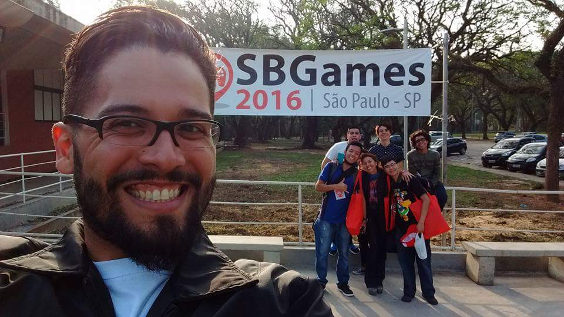
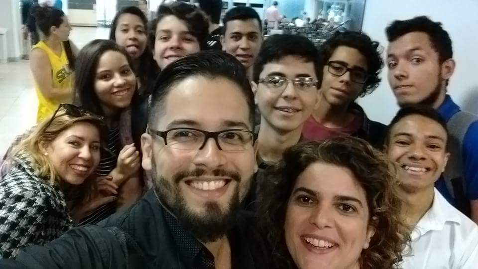

Wednesday, September 8th, 2016
The amazing trip of young game developers
September 8 to 10
The “Simpósio Brasileiro de Games” (SBGames) is the biggest academic event of Latin America in the area of Games and Digital entertainment.Conducted by the “Sociedade Brasileira de Computação”, the event brings together researchers, students and entrepreneurs that have electronic games as an object of research and product development;The event happens on September at 8 to 10, in “Escola Politécnica da Universidade de São Paulo(USP)”.
In this issue a few students, with the help of projects methodology teacher (Daniel Martins), “C.E. José Leite Lopes (N.A.V.E. Rio)”, which is a program of Secondary Education Integrated with technical courses developed by “Oi Futuro” in partnership with the State Department of Education of Rio de Janeiro and Pernambuco, Kids & Teens attended the event at the recent trail. In this trail they gave lectures on the game market and helped in the organization.In addition they developed a Card Game.
The Indie Game is a game that seeks to give the first contact, so special and fun, these young people are entering the market world indies, dealing with the production of these games.
The event,the program N.A.V.E. and the game produced are evidence of how the market for independent games is growing in Brazil and in the world, more and more companies are investing in young producers who have the will and talent to become unique game developers.
 